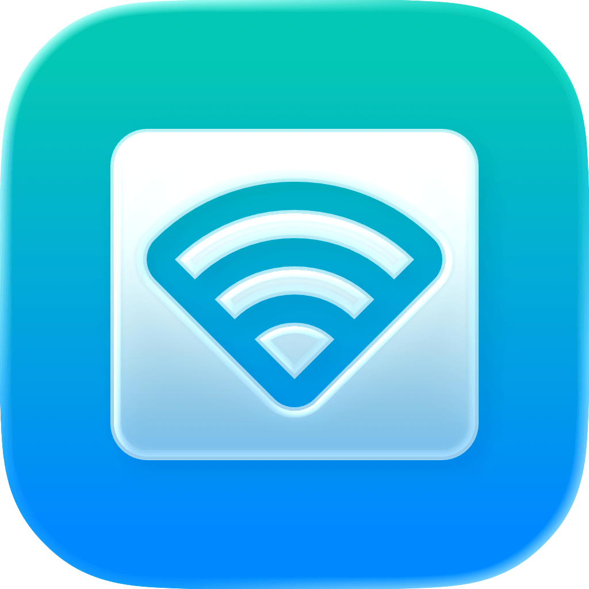

Everdisk
Turn your iPhone or iPad into a wireless drive
- Watch on your TVStream photos, videos & music over DLNA
- Open in any browserBrowse, view & download over a link
- Network driveMount in Finder, Windows & Linux (WebDAV)
- No WiFi? Use a cableMove files over USB, faster than WiFi
- Share your whole libraryEvery photo & song on your network
- Send files backUpload photos, docs & folders to your device
- Private and safeStays on your network, with login & blocking